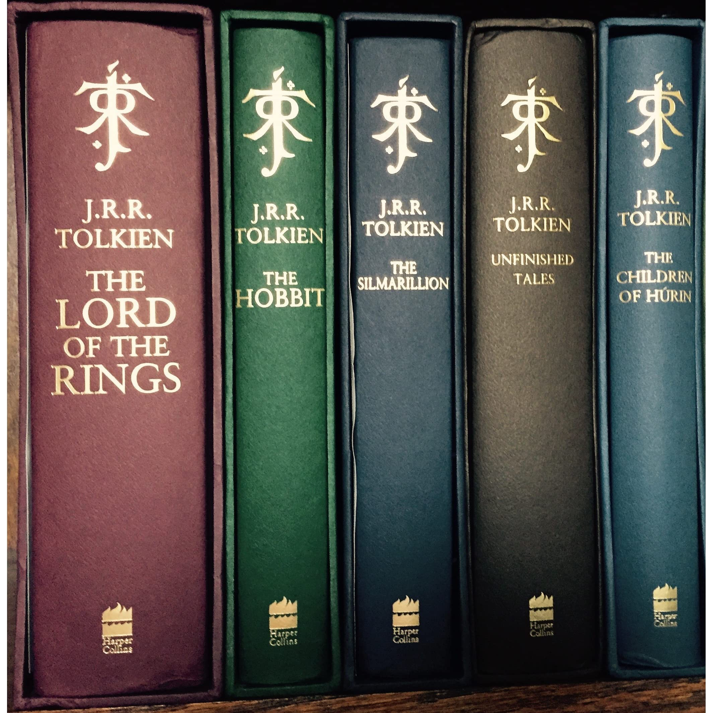

Władca Pierścieni
Władca Pierścieni (ang. The Lord of the Rings) – powieść J.R.R. Tolkiena, której akcja rozgrywa się na stworzonym przez niego fikcyjnym kontynencie – Śródziemiu. Jest ona kontynuacją innej opowieści tego samego autora zatytułowanej Hobbit, czyli tam i z powrotem. Była pisana z przerwami między 1937 a 1949 rokiem, także w trakcie trwania II Wojny Światowej. Szybko stała się jedną z najpopularniejszych i najlepiej sprzedających się książek w historii literatury (około 150 milionów sprzedanych egzemplarzy).
Władca Pierścieni często mylnie nazywany jest trylogią. Tak naprawdę to powieściowa całość podzielona na sześć ksiąg. Ze względu na swoją dużą objętość został wydany w trzech tomach, głównie pod wpływem nacisków wydawcy. Nie było to jednak oryginalne zamierzenie Tolkiena.
Tytuł utworu nawiązuje do głównego antagonisty w opisanej historii - Ciemnego Władcy, Saurona, pana i twórcy zaginionego Jedynego Pierścienia, mającego moc kontrolowania pozostałych Pierścieni Władzy, będących w posiadaniu przedstawicieli trzech ras zamieszkujących Śródziemie i tym samym dającego mu władzę nad całym kontynentem oraz czyniąc go Władcą Pierścieni.

Agata Buła 1b